Bibliographic Applications - screen
images and menu structure
Applications -
This information is provided as a guide to developing a GUI interface
design for the OpenOffice Bibliographic facility. Nota Bene is probably the
best example of integrated word processor and bibliographic functions that we
have found.
Note: that we are not planning to copy these interface panels but they
provide examples of the features required.
Ibidem Database Maintenance Option
Panels
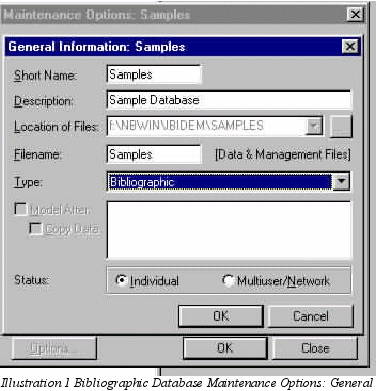
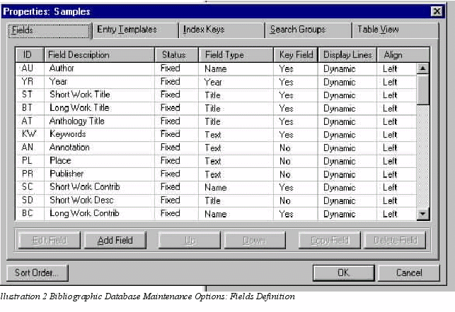
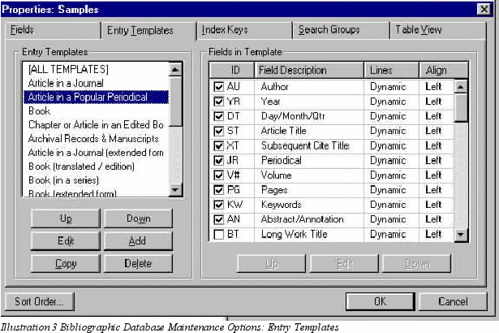
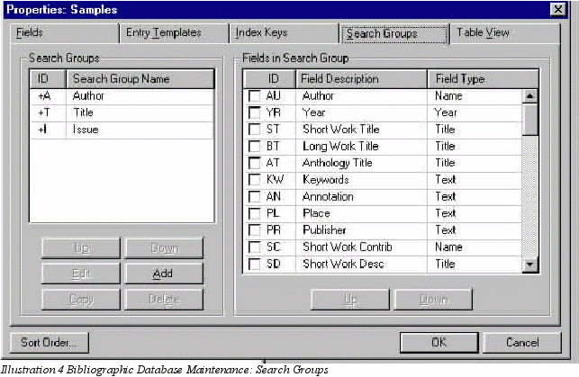
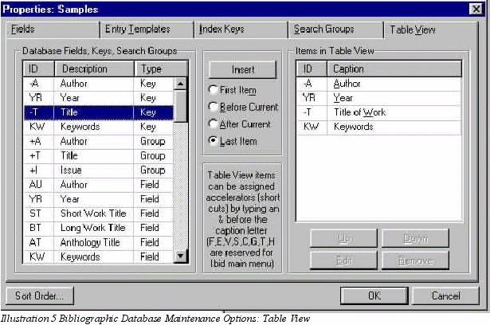
Ibidem Data Entry Screens
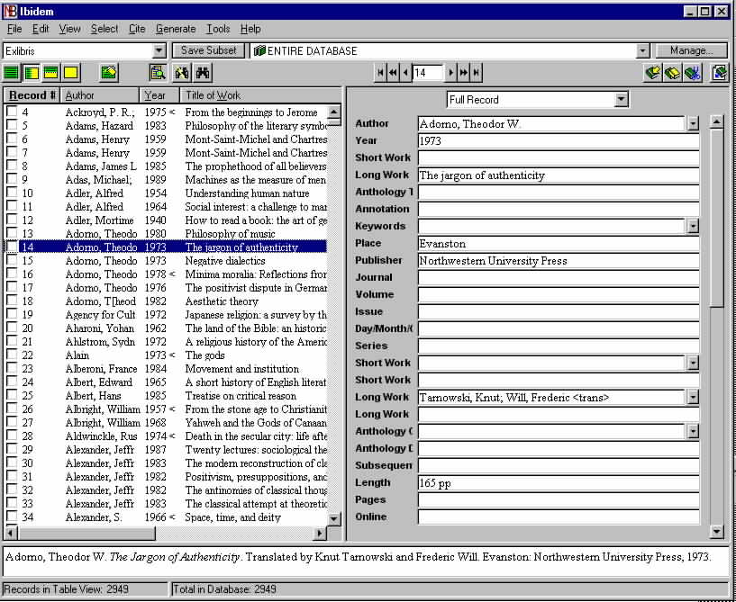
Illustration 6 Data Entry Showing Side panel and formatted citation at
bottom
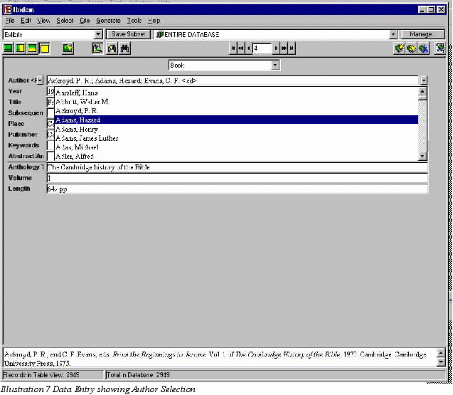 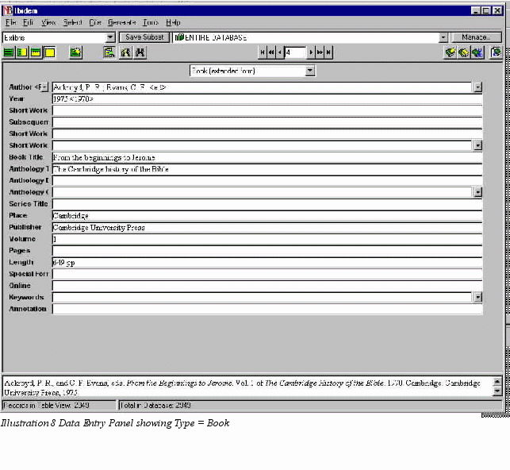
Ibidem Insert/edit Citation
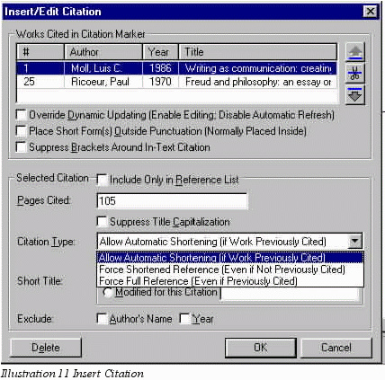
Ibidem Document Style Selection and
Option Panels
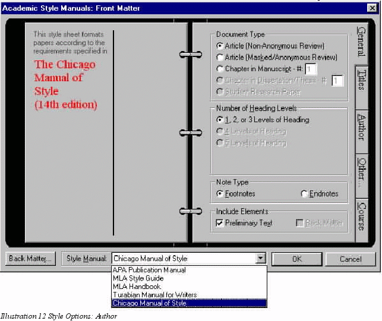
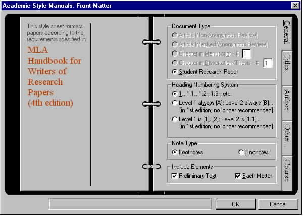
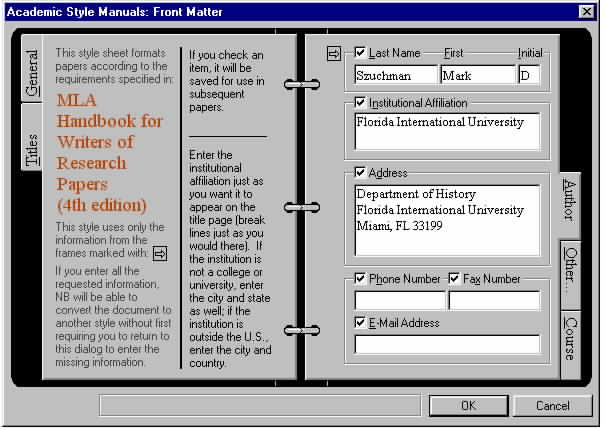
Biblioscape Data Entry Panel
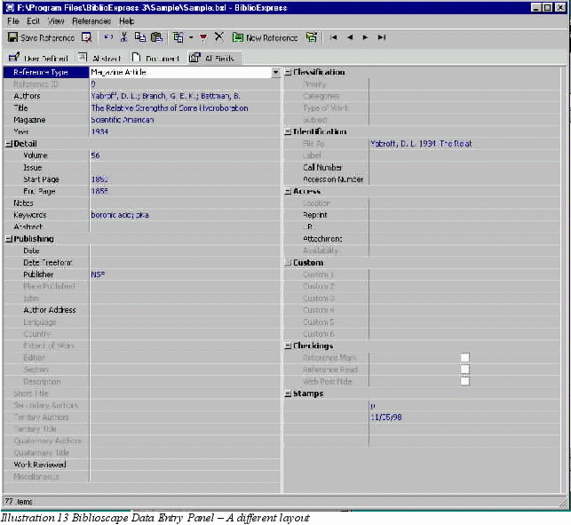
Ibidem Menu Structure
(Thanks to Eric T. Williams)
File
- New Database
- Open Database
- Close Database
- Append Records
- Ibidem
Records
- BookWhere
Records
- EndNote
Records
- ProCite
Records
- Citation
Records
- Custom
Format Records
- View Properties
- Maintain Database
- Copy/Backup Database
- Restore Database
- Exit
- Edit
- Restore Record
- Cut Text
- Copy Text
- Paste Text
- New Template
- New Record
- Duplicate Record
- Delete Record
- Custom Formats
- Bibliography
- Subject
Bibliography
- View
- Table
- Vertical Split
- Horizontal Split
- Record
- Pop-Up Field Window
- Preview Panel
- Generated Results
- Bibliography
- Subject
Bibliography
- Authority
List
- Standard
- Record
Numbers
- Table
Format
- Record
Format
- Datafile
Format
- Log File
- Table Refresh
- Original Settings
- Options
- {Record
View allows for font display and correction of
vertical
line adjustment.
- Preview
allows for font display and selection of
citation
formats}
- Select
- Fast Search
- Text Search
- Works Cited
- Go To Subset
- Save Subset
- Manage Subsets
- Cite
- Insert Citation
- Inspect Current
- Document Style
- {General
lists databases and a few settings.
- In-Text
Citation Format allows for Footnote/Endnote,
Short
Form (as specified by a chosen writing style),
&
Reference Number.
- Reference
List Format allows for reference formating
according
to chosen writing style}
- Citation Options
- Update Current
- Update Dynamic
- Update All
- Generate
- Bibliography
- Subject Bibliography
- Authority List
- Standard
- Record
Numbers
- Table Format
- Record Format
- Datafile Format
- Orbis Note Form
- Tools
- BookWhere
- Convert
- Convert
Old Document
- Convert
Database from DOS
- Options
- {same
options as Cite>DocumentStyle}
- Help
- Contents
- Standard Help Search
- Printable Help
- Help Search (Orbis)
- About Ibidem